Single-cell: expression across groups
Source:vignettes/articles/sc-expression.Rmd
sc-expression.RmdQuestion: which genes mark each group of cells, and how does a gene’s expression differ between groups or conditions?
| Function | Shows | Best for |
|---|---|---|
top_markers() |
the top genes of each group from a marker table | choosing features |
DotPlot_bioToolkit() |
% of cells expressing (size) and mean expression (colour) | many genes × groups |
VlnPlot_bioToolkit() |
per-cell distributions, with box and points | a few genes or QC metrics |
RidgePlot_bioToolkit() |
per-cell distributions as density ridges | shapes of distributions, many groups |
DoHeatmap_bioToolkit() |
expression of each cell or group mean, z-scored | marker blocks, conditions within cell types |
All share group.by (the groups
compared, marked by their colour) and
split.by (a higher-level grouping drawn as
labelled blocks):
group.by = "condition", split.by = "cell_type" compares
conditions within each cell type. Note that Seurat’s
DotPlot() / VlnPlot() use
split.by the other way round.
Blocks (split.by, and groups of genes given as a named
list) are marked the same way in every plot: a bar along the block, 3.5
pt thick (group.bar.width), set a little off the grid, with
the block’s name beyond it. Bars are black by default;
split.by.cols and feature.group.cols colour
them (a palette name, or colours named by block). They sit opposite the
axis labels by default (gene groups on top when genes are the columns);
"labels" in split.by.side /
feature.group.side moves them beyond the labels.
Data: 8,000 PBMCs from Kang et al. 2018, control or
interferon-β (IFN-β) stimulated, with the authors’ cell types. Gene
symbols are human (upper case, e.g. CD3E).
pbmc <- docs_kang()Marker genes
top_markers() reads a marker table (Seurat’s
FindAllMarkers() or any DE table with a group column) and
returns the top genes of each group as a named list, the
features format of the dot plot and heatmap. With
unique = TRUE (default), a gene that marks several groups
is kept for the group where its fold change is largest.
markers <- Seurat::FindAllMarkers(
pbmc,
only.pos = TRUE,
logfc.threshold = 0.5,
min.pct = 0.1,
verbose = FALSE
)
top <- top_markers(markers, n = 3)
str(top)
#> List of 8
#> $ CD4 T : chr [1:3] "LEF1" "ADTRP" "TSHZ2"
#> $ CD8 T : chr [1:3] "GZMH" "KLRG1" "LAG3"
#> $ NK : chr [1:3] "SH2D1B" "KLRF1" "LINC00996"
#> $ B : chr [1:3] "MS4A1" "LINC00926" "CD79A-ENSG00000105369"
#> $ CD14 Mono : chr [1:3] "SERPINB2" "S100A8" "S100A9"
#> $ FCGR3A Mono : chr [1:3] "VMO1" "CASP5" "CH25H"
#> $ DC : chr [1:3] "DNASE1L3" "FSCN1" "FCER1A"
#> $ Megakaryocyte: chr [1:3] "GP9" "CLDN5" "PTCRA"rank.by = "logfc" (default) favours genes specific to a
group; rank.by = "padj" favours broadly and strongly
expressed genes, as p-values grow with group size:
str(top_markers(markers, n = 3, rank.by = "padj")[1:3])
#> List of 3
#> $ CD4 T: chr [1:3] "LTB-ENSG00000227507" "SELL" "LDHB"
#> $ CD8 T: chr [1:3] "GZMH" "CD8A" "LAG3"
#> $ NK : chr [1:3] "GNLY" "CLIC3" "PRF1"Per-cell tests (as FindAllMarkers()) treat cells as
replicates: fine to rank markers, but their p-values are not evidence
for differences between conditions; use pseudobulk tests for that (see
DE: many comparisons).
Dot plot
DotPlot_bioToolkit(pbmc, features = top, group.by = "cell_type")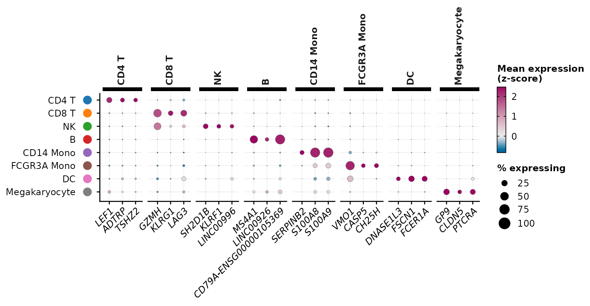
By default, each gene’s mean expression is z-scored across groups
(scale), so colours compare groups for a gene, not genes
with each other. The colour scale is centred on 0 and each side reaches
its full colour at its own most extreme value (at most ±2.5), so it need
not be symmetric. Groups are marked with the cell type colours of
DimPlot_bioToolkit(); the groups of genes by bars on
top.
Variants
Interferon-stimulated genes in each condition (group.by,
the dot colours), within each cell type (split.by, the
blocks, named on the right):
isg <- c("ISG15", "IFI6", "IFIT1", "MX1", "CXCL10")
DotPlot_bioToolkit(
pbmc,
features = isg,
group.by = "condition",
split.by = "cell_type",
group.cols = c("grey60", "#B5338A")
)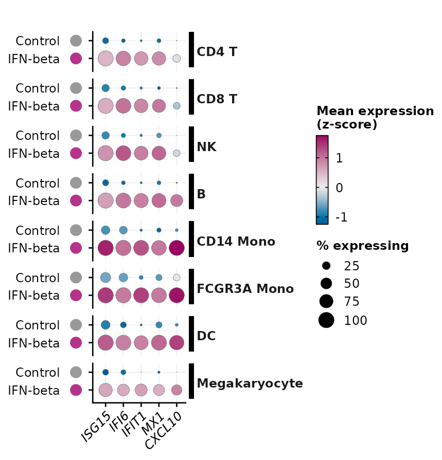
The gene groups take the cell type colours, and both groupings move
beyond the labels ("labels"):
cell_cols <- bt_palette("scanpy-20", nlevels(pbmc$cell_type))
names(cell_cols) <- levels(pbmc$cell_type)
DotPlot_bioToolkit(
pbmc,
features = top[1:4],
group.by = "condition",
split.by = "cell_type",
group.cols = c("grey60", "#B5338A"),
feature.group.cols = cell_cols,
feature.group.side = "labels",
split.by.cols = cell_cols,
split.by.side = "labels"
)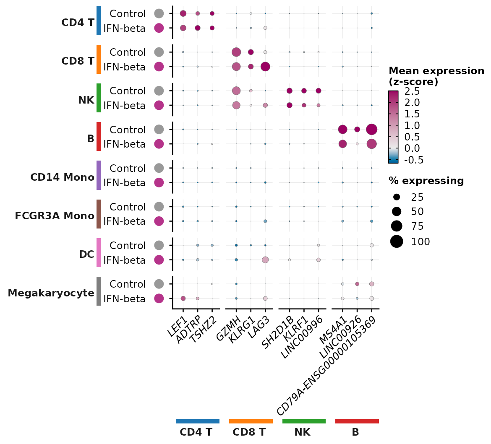
Unscaled mean expression (log-normalized), comparable between genes:
DotPlot_bioToolkit(pbmc, features = isg, group.by = "cell_type", scale = FALSE)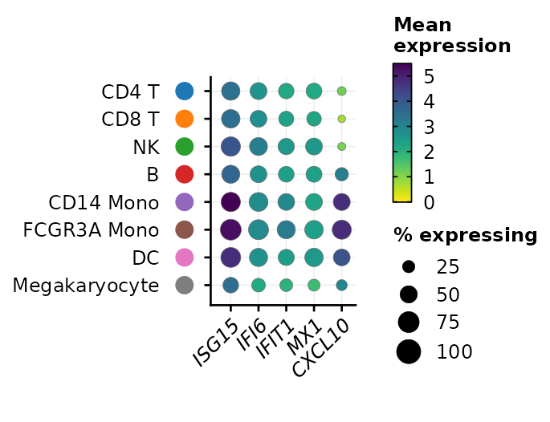
Genes as rows, groups as columns (the gene groups then on the right);
group.marker = "strip" draws colour strips instead of
dots:
DotPlot_bioToolkit(
pbmc,
features = top[1:4],
group.by = "cell_type",
flip = TRUE,
group.marker = "strip"
)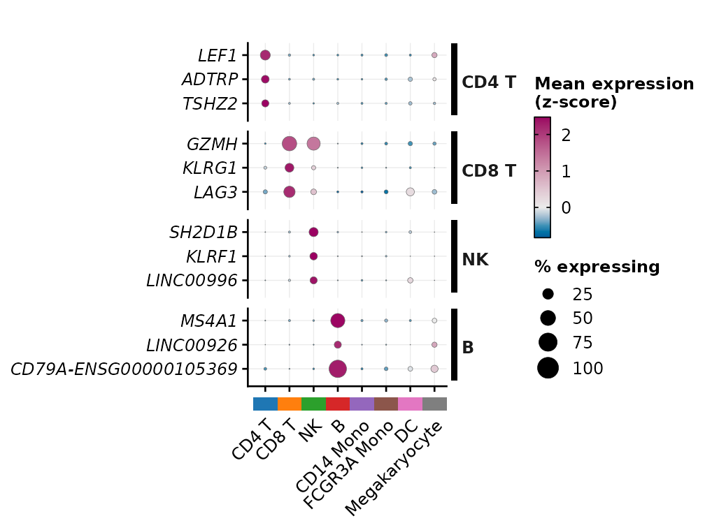
Order genes (within each gene group) and groups by hierarchical clustering:
DotPlot_bioToolkit(
pbmc,
features = unlist(top, use.names = FALSE),
group.by = "cell_type",
cluster.features = TRUE,
cluster.groups = TRUE
)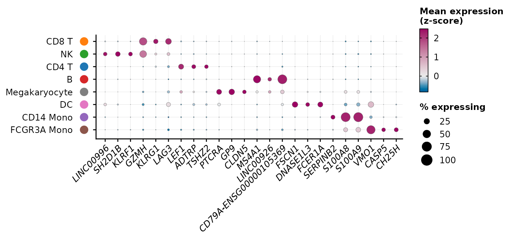
average = "linear" (default, as Seurat) is the log of
the mean normalized expression, a pseudobulk; "log" (as
SCpubr) the mean of log values, less driven by a few very high cells.
pct.min hides dots of groups with few expressing cells:
DotPlot_bioToolkit(
pbmc,
features = top,
group.by = "cell_type",
average = "log",
pct.min = 5
)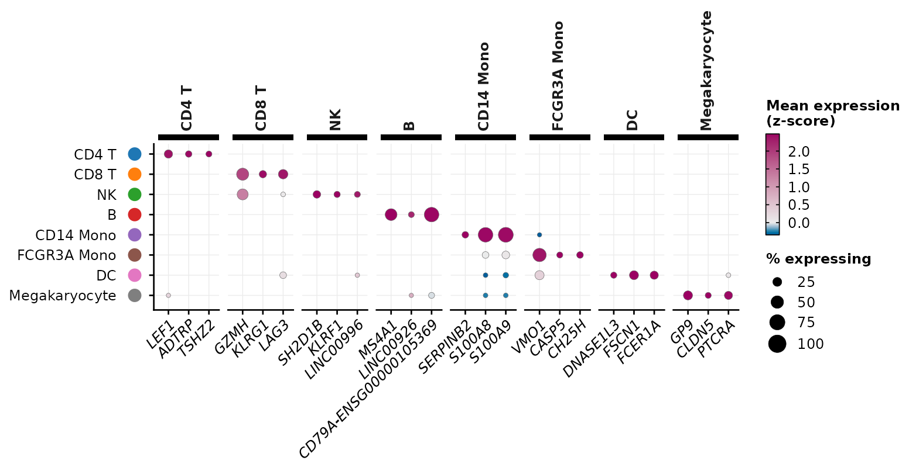
Violin plot
VlnPlot_bioToolkit(pbmc, features = c("CD14", "LYZ"), group.by = "cell_type")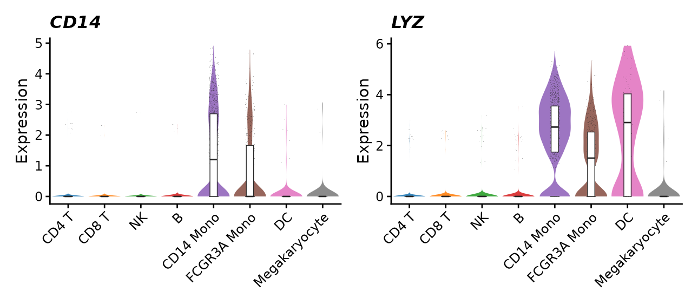
Each feature has its own panel and axis; points are a random sample
of at most pt.n cells per violin, rasterized.
Variants
Metadata columns work like genes, from the object or from a data
frame of per-cell values. log puts chosen features on a
log10 axis:
VlnPlot_bioToolkit(
pbmc[[]],
features = c("nCount_RNA", "nFeature_RNA"),
group.by = "sample",
log = TRUE,
flip = TRUE,
pt.n = 300
)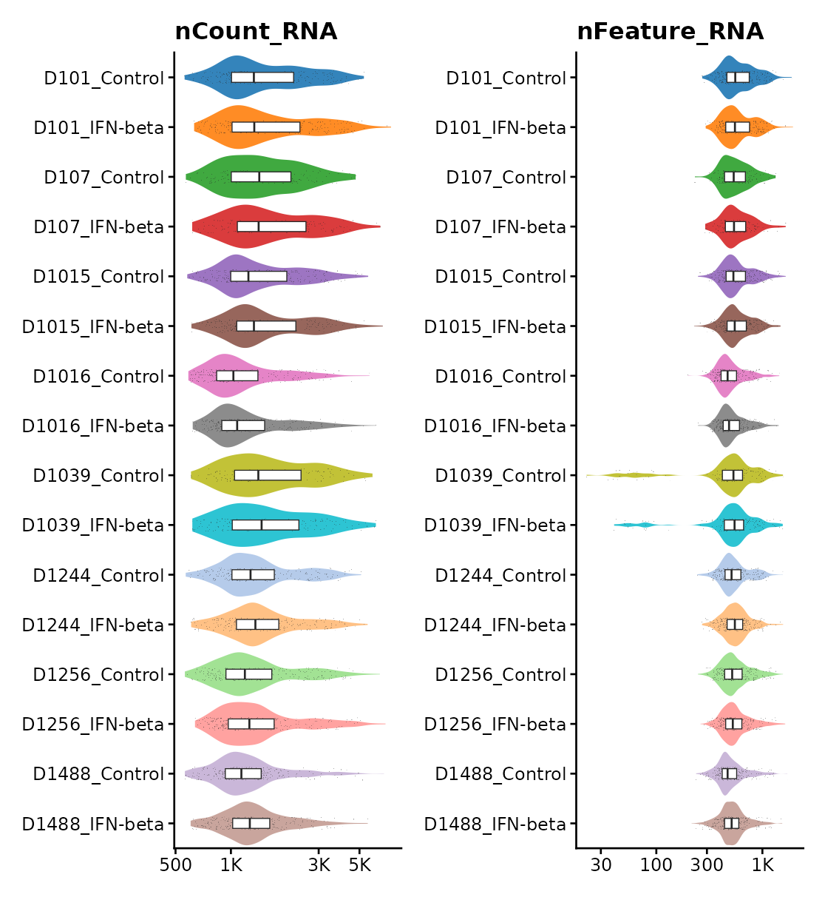
Sparse genes: most cells have 0 counts.
zeros = "annotate" draws the violins of the cells above 0
and prints the % of cells above 0, so that both the fraction expressing
and the level are visible. The cell type blocks are marked by bars in
their colours (split.by.cols):
VlnPlot_bioToolkit(
pbmc,
features = "CXCL10",
group.by = "condition",
split.by = "cell_type",
zeros = "annotate",
cols = c("grey60", "#B5338A"),
split.by.cols = cell_cols
)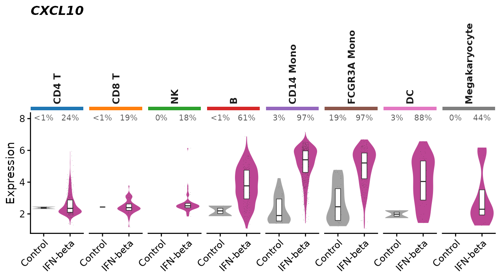
Many genes as thin rows sharing the group axis; pt.n = 0
draws no points:
VlnPlot_bioToolkit(
pbmc,
features = c("CD3E", "NKG7", "MS4A1", "CD14", "FCGR3A", "PPBP"),
group.by = "cell_type",
stack = TRUE,
pt.n = 0
)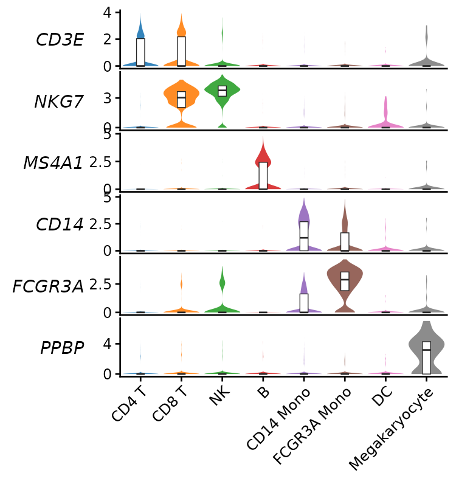
Zoom past a few extreme cells ("q99": the 99th
percentile). The violins and boxes are computed from all cells and cut
at the top of the axis; points above it are not drawn:
VlnPlot_bioToolkit(
pbmc,
features = "nCount_RNA",
group.by = "cell_type",
y.max = "q99"
)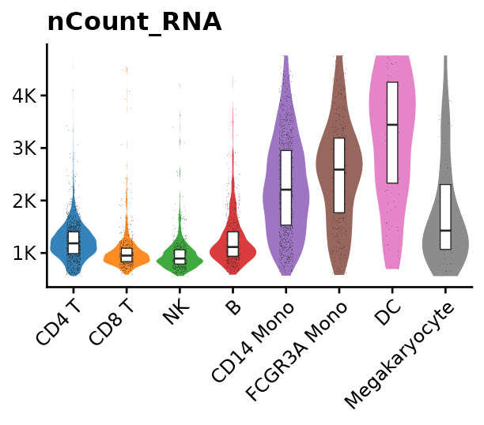
Ridge plot
The same data arguments as the violin plot, drawn as density ridges.
Each ridge is scaled to its own height, so ridges compare shapes, not
cell numbers; overlap sets how far they overlap.
RidgePlot_bioToolkit(
pbmc,
features = c("ISG15", "nFeature_RNA"),
group.by = "cell_type",
overlap = 1.5
)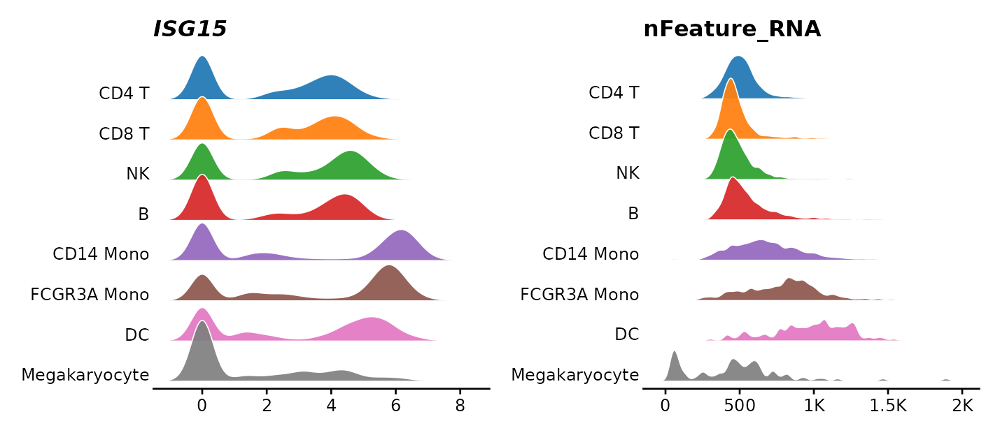
RidgePlot_bioToolkit(
pbmc,
features = "CXCL10",
group.by = "cell_type",
zeros = "annotate",
cells = colnames(pbmc)[pbmc$condition == "IFN-beta"]
)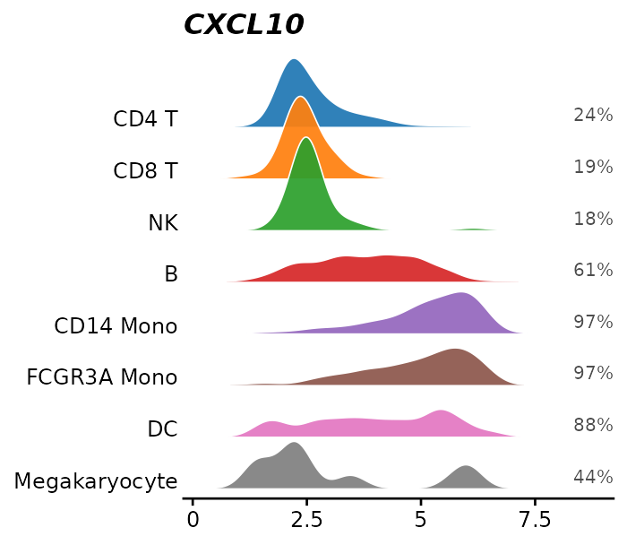
Heatmap
Genes as rows, in blocks of the features list, each
marked by a bar opposite the gene names; columns are cells (at most
max.cells per group, so that small groups stay visible),
z-scored per gene, in blocks named on top. Any gene of the assay can be
drawn, not only those in scale.data.
DoHeatmap_bioToolkit(
pbmc,
features = top_markers(markers, n = 5),
group.by = "cell_type",
max.cells = 100
)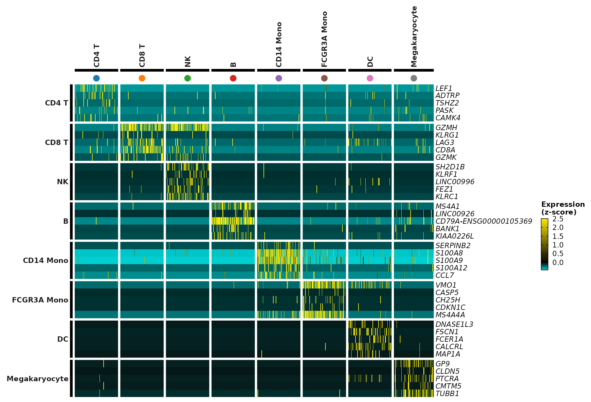
Variants
One column per group mean: here conditions (dots) within cell types (blocks). Group means use a light-centred diverging palette:
heat_genes <- list(
"IFN-stimulated" = isg,
"Markers" = c("CD3E", "MS4A1", "CD14")
)
DoHeatmap_bioToolkit(
pbmc,
features = heat_genes,
group.by = "condition",
split.by = "cell_type",
columns = "groups",
group.cols = c("grey60", "#B5338A")
)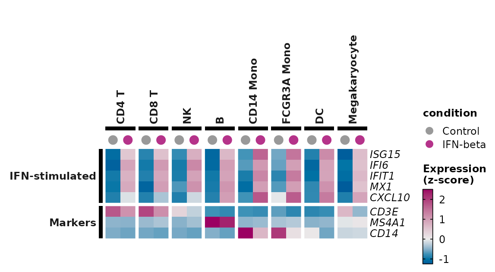
Blocks of genes and of columns in the cell type colours
(feature.group.cols, split.by.cols):
DoHeatmap_bioToolkit(
pbmc,
features = top_markers(markers, n = 4),
group.by = "cell_type",
max.cells = 100,
group.marker = "none",
feature.group.cols = cell_cols,
split.by.cols = cell_cols
)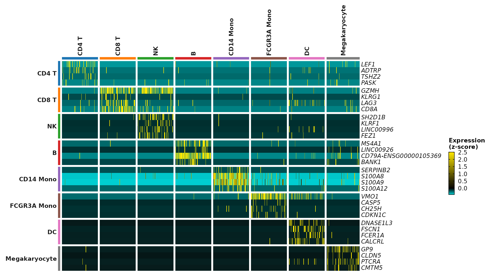
Further metadata as colour strips above the columns, e.g. the donor of each cell:
mono <- colnames(pbmc)[pbmc$cell_type == "CD14 Mono"]
DoHeatmap_bioToolkit(
pbmc,
features = isg,
cells = mono,
group.by = "condition",
annotations = "donor",
max.cells = 150,
group.cols = c("grey60", "#B5338A")
)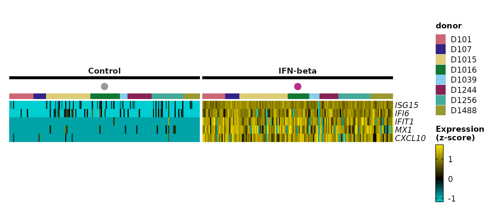
For many genes, names are hidden when rows are too thin; name a few with leader lines:
top20 <- top_markers(markers, n = 20)
first_genes <- vapply(top20, `[`, "", 1) # first gene of each group
DoHeatmap_bioToolkit(
pbmc,
features = top20,
group.by = "cell_type",
max.cells = 100,
label.features = first_genes
)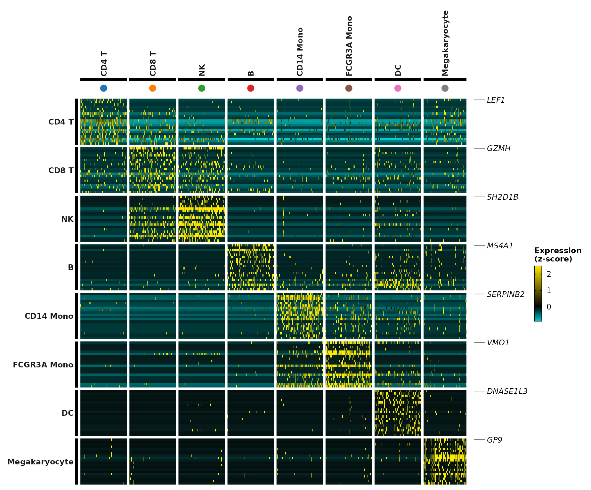